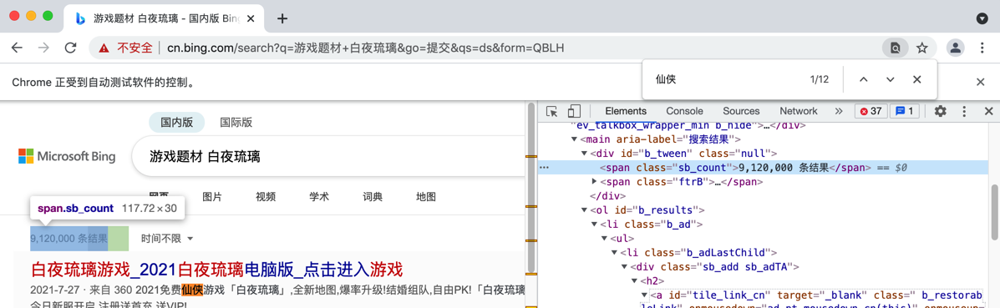

等待元素出现
很多时候，会遇到类似问题：
查找元素，点击触发搜索类的操作后，页面刷新后，继续去寻找搜索结果元素，调试时代码逻辑没问题，但直接运行却找不到搜索结果
这时候，往往是由于：没有等待搜索完毕
而典型的解决办法是，去研究搜索结果完毕后，肯定会显示的某些元素。然后去判断和等待该元素是否出现
- 该元素显示了：说明搜索结果完成了
- 该元素还没显示：说明搜索结果还没完成，需要继续等待
对于等待元素出现的操作，Selenium中有专门的函数实现这个逻辑。
举例：等待百度搜索结果完成后的某元素出现
对于百度页面搜索结果，完成时，必然会出现的一个元素是：

对应html：
<span class="nums_text">百度为您找到相关结果约2,370,000个</span>
等待该元素出现的对应代码是：
from selenium.webdriver.support.ui import WebDriverWait
from selenium.webdriver.common.by import By
from selenium.webdriver.support import expected_conditions as EC
MaxWaitSeconds = 10
numTextElem = WebDriverWait(chromeDriver, MaxWaitSeconds).until(
EC.presence_of_element_located((By.XPATH, "//span[@class='nums_text']"))
)
print("Search complete, showing: %s" % numTextElem)
举例：等待bing必应搜索结果完成后的某元素出现
对于bing必应搜索结果完成后，必然会出现的一个元素是：

html:
<span class="sb_count">9,120,000 条结果</span>
等待该元素出现的对应代码是：
# wait bing search complete -> show some element
# <span class="sb_count">9,120,000 条结果</span>
MaxWaitSeconds = 10
searchCountElem = WebDriverWait(driver, MaxWaitSeconds).until(
EC.presence_of_element_located((By.XPATH, "//span[@class='sb_count']"))
)